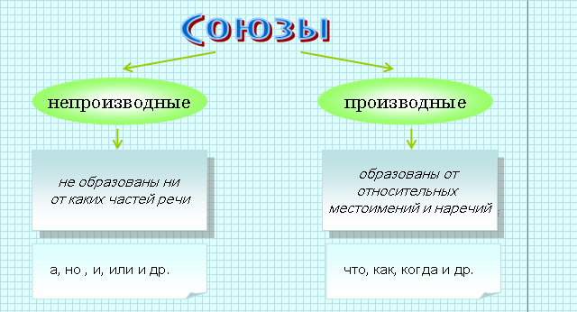
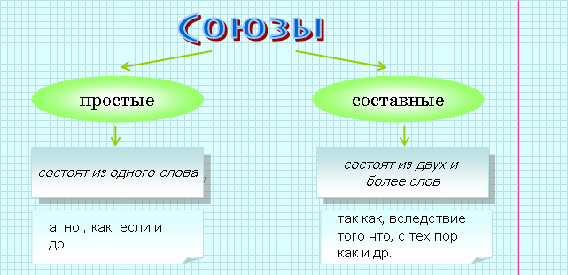
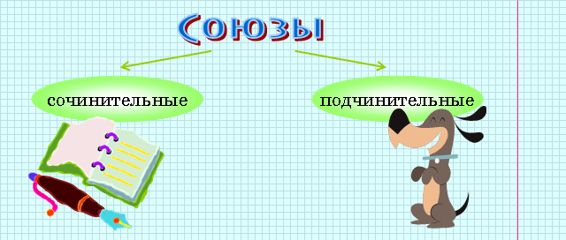
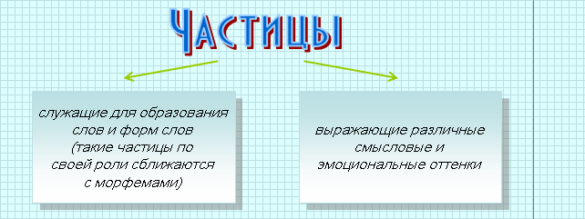

|
Союз − это служебная часть речи, которая связывает члены предложения и простые предложения в составе сложного. |
 |
Купил карандаш и бумагу (союз и связывает однородные члены).
Мы увидели, что взошло солнце (союз что связывает простые предложения в составе сложного). |



|
Сочинительные союзы связывают однородные члены предложения или части сложносочиненного предложения. |
|
Олеся опустила веки и со слабой улыбкой покачала головой (союз и связывает однородные сказуемые). Вы этого не можете понять, а я это чувствую (союз а связывает части сложносочиненного предложения). |
| Особенность этих союзов в том, что они выражают значение равноправия. |
|
соединительные (и, а, да (в значении и ), ни…ни, также, тоже, как…так и, не только…но и) | |
Было грустно и в весеннем воздухе, и на потемневшем небе, и в вагоне. |
|
противительные (а, но, да (в значении но), однако, зато, же) | |
Доброго разговора мы не минуем, но за столом начинать не будем. |
|
разделительные (или, либо, ли…ли, то…то, не то… не то, то ли…то ли) | |
Долго ль мне гулять на свете то в коляске, то верхом, то в кибитке, то в карете, то в телеге, то пешком. |
|
Подчинительные союзы служат для связи частей сложноподчиненного предложения и выражают значение зависимости, подчинения придаточной части сложноподчиненного предложения от главной. |
|
Я увидел (что?), как взошло солнце. |
|
изъяснительные (указывают на то, о чем говорят): что, чтобы, как | |
Доктор сказал, что обливания полезны для здоровья. |
|
временные (указывают на время): когда, пока, едва, лишь и др. | |
На душе стало теплее, когда взошло солнце. |
|
причинные (указывают на причину): потому что, так как, оттого что, ибо и др. | |
Я взял зонт, потому что шел дождь. |
|
целевые (указывают на цель): чтобы, для того чтобы, дабы и др. | |
Мы приехали, чтобы отдохнуть. |
|
условные (указывают на условие): если, раз, если бы, когда и др. | |
Закаляйся, если хочешь быть здоров. |
|
уступительные (указывают на противоречие одного события другому): хотя, несмотря на то что и др. | |
Было очень холодно, хотя и солнечно. |
|
сравнительные (указывают на сравнение): как, словно, будто, как будто и др. | |
Он засмеялся, точно сталь зазвенела. |
| Необходимо отличать союзы тоже и также, которые пишутся слитно, от местоимения то и
наречия так, которые пишутся раздельно с частицей же. Союзы тоже и также взаимозаменяемы, кроме того, их можно заменить на союз и. |
|
Вчера брат уехал в лагерь, через неделю я тоже еду (союз тоже).
Я выбрал то же решение, что и ты (местоимение то и частица же). Дети также примут участие в прогулке (союз также). В доме сейчас так же уютно, как бывает только под Новый год (наречие так и частица же). |
|
| Необходимо отличать союз зато от местоимения то с предлогом за. При проверке следует помнить, что союз зато можно заменить союзном но. |
|
Мы устали, зато получили благодарность (союз зато). Берись за то, что тебе по душе (местоимение то с предлогом за). |
|
| Следует различать союз чтобы и местоимение что, после которого стоит частица бы, входящая в форму условного наклонения глагола. Для проверки следует помнить, что союз чтобы можно заменить на союз для того чтобы. | |
Запиши, чтобы (=для того чтобы) не забыть. Что бы ты хотел получить на день рождения? |
|
Частица − это служебная часть речи, которая придает словам дополнительные смысловые и эмоциональные оттенки и служит для образования новых форм слов. |
|
Ведь вы это знаете. Даже вы это знаете. Пусть будет свет! |
| Частицы не являются членами предложения, но могут входить в состав членов предложения. |
|
Пусть сильнее грянет буря! (частица пусть образует повелительное наклонение глагола и входит в состав сказуемого). |

|
наклонений глагола: повелительного (да, пусть, пускай, давай); условного (бы). |
|
Повелительное: Давайте жить дружно. Условное: Эх, пошел бы дождь. |
|
форм степеней сравнения прилагательного (более, менее, самый) | |
Ты у меня самый смелый. |
|
неопределенных местоимений (-то, -либо, -нибудь, кое-). | |
Кто-нибудь знает, что случилось? |
 |
Вопросительные частицы (ли, разве, неужели, а, что). Например: Неужели в самом деле все сгорели карусели? |
|
Восклицательные частицы (что за, как, ну и). Например: Что за чудные цветы! |
|
Указательные частицы (вот, вот и, вон). Например: Вот и наш дом. |
|
Усилительные частицы (даже, просто, ведь, да и, же). Например: У тебя такие руки, что сбежали даже брюки… |
|
Отрицательные частицы (не, ни) |
|
Частица не придает отрицательное значение слову или всему предложению | |
Надень любое платье, только не красное (отрицание относится к одному слову). Не ходи поздно (отрицание относится ко всему предложению). |
|
При повторении частица не приобретает утвердительное значение. | |
Я не мог не помочь вам. |
|
Частица ни усиливает отрицательное значение предложения, в котором уже есть частица не или слово нет. | |
В доме нет ни души. В доме не было ни души. |
|
При повторении частица ни приобретает значение сочинительного союза. | |
На небе нет ни туч, ни облаков. |
|
Частица ни употребляется в усилительном значении в придаточных предложениях с местоимениями и наречиями кто, что, куда, где и др. | |
Куда ни посмотрю, везде темно (т. е. везде посмотрю). Кого ни спрошу, ответа никто не знает (т. е. всех спрашиваю). |
| Частица не пишется раздельно | Частица не пишется слитно (является приставкой) |
| С глаголами, краткими причастиями, деепричастиями, словами категории состояния. Например: не стыжусь, не закончено, не услышав, не надо. |
Со всеми словами, которые без не не употребляются. Например: негодяй, нелепый, невпопад. |
| С полными причастиями, которые имеют зависимые слова. Например: не замеченные охотником следы. |
С существительными, прилагательными, наречиями, когда с не образуется новое слово, которое можно заменить синонимом без не. Например: неразговорчивый (= молчаливый), недруг (= враг). |
| С существительными,
прилагательными и наречиями, если есть или подразумевается
противопоставление. Например: не друг, а враг, не высокий, а низкий, не далеко, а близко. |
С полными причастиями, если у них нет зависимых слов. |
| С прилагательными,
местоимениями и наречиями в составе отрицательных частиц вовсе не,
далеко не, отнюдь не или при отрицательных местоимениях и наречиях
нисколько не, никому не, нигде не. Например: никому не знакомый, вовсе не трудно. |
С беспредложными формами отрицательных и неопределенных местоимений:
некто, нечто, некому, некуда, негде. Например: негде отдохнуть. |
| С отрицательными
местоимениями в формах косвенных падежей с предлогами: не о ком, не за
что, не у кого. Например: Не у кого спросить. |
В отрицательных местоимениях без предлога: никто, ничто, ничему и др. Например: Не случилось никого проводить в дорогу. |
| В сложноподчиненных
предложениях. Например: Сколько ты ни стучи природе в дверь, не отзовется она понятным словом. |
В отрицательных наречиях: нигде, никуда, никогда и др. |
| Когда употребляется в роли
сочинительного союза. Например: Хозяин был ни добр, ни зол. |
|
| Когда служит для усиления
отрицания в предложении, в котором уже есть частица не или слово нет. Например: Елена только посмотрела на мать и ни слова не сказала. |
|
| В отрицательных
местоимениях с предлогом. Например: Ни у кого нельзя было спросить. |